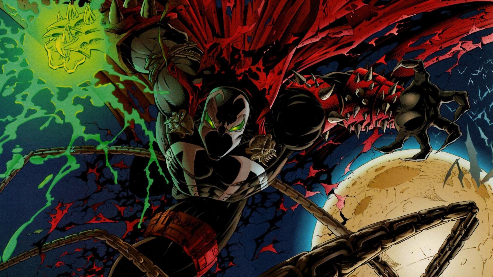

Koleksi Luas
Akses ribuan buku dari berbagai genre
Akses 24/7
Baca buku favorit Anda kapan saja, di mana saja
Mudah Digunakan
Antarmuka ramah pengguna untuk pengalaman membaca yang lancar
Akses ribuan buku dari berbagai genre
Baca buku favorit Anda kapan saja, di mana saja
Antarmuka ramah pengguna untuk pengalaman membaca yang lancar